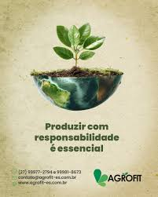

veja como nos ajudar nesse projeto.
Nós ajudamos no equilíbrio de produção e também com o meio ambiente.
Se estiver com dúvida, ou tem sugestões sobre esse contexto, entre em contato conosco através do formulário abaixo.
